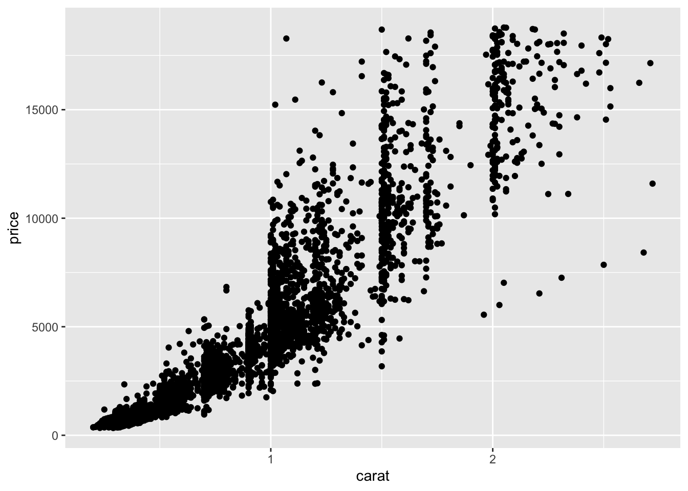
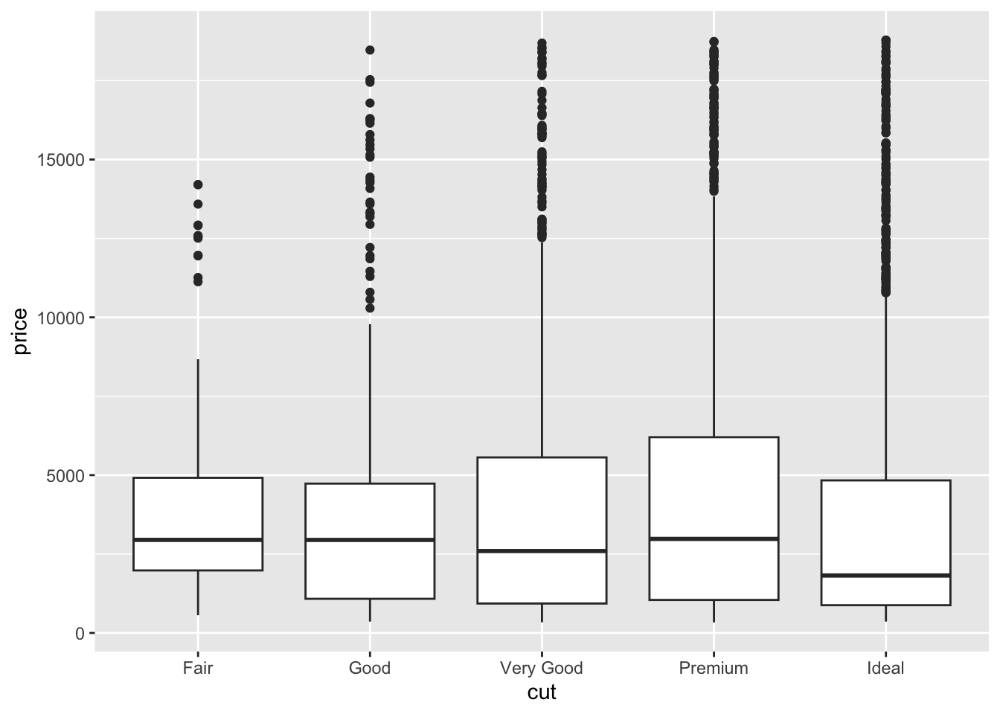
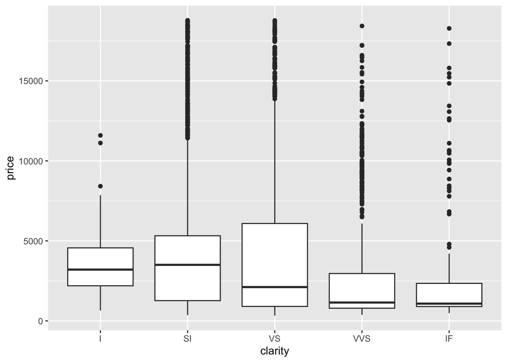
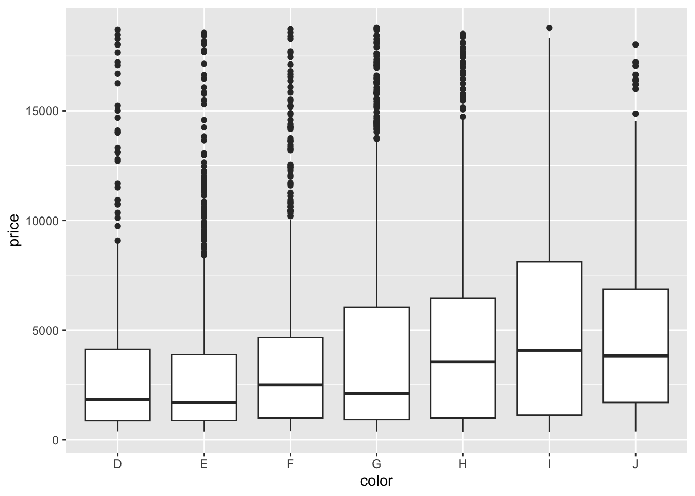
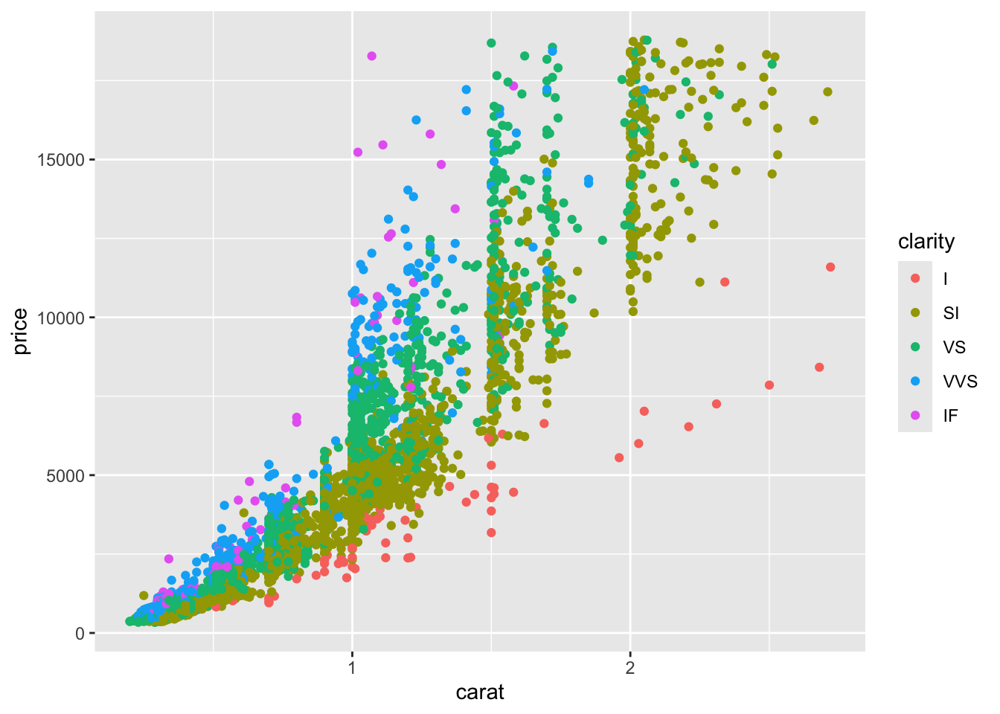

AE 05: Diamonds!
We want to understand how “The 4 Cs” predict a diamond’s price. We have a dataset with 5,000 rows, where each row is a diamond, and along the columns we record each diamond’s…
-
price: in USD; -
carat: weight of the diamond; -
cut: quality of the cut (Fair, Good, Very Good, Premium, Ideal); -
color: diamond colour, from J (worst) to D (best); -
clarity: a measurement of how clear the diamond is;- I (worst), SI, VS, VVS, IF (best);
-
length_mm; -
width_mm.
Load and prepare the data
diamonds <- read_csv("data/diamonds.csv")These data have several categorical variables: cut, color, and clarity. By default these variables will have their levels ordered alphabetically:
diamonds <- diamonds |>
mutate(
cut = factor(cut),
clarity = factor(clarity),
color = factor(color)
)
levels(diamonds$cut)[1] "Fair" "Good" "Ideal" "Premium" "Very Good"levels(diamonds$clarity)[1] "I" "IF" "SI" "VS" "VVS"levels(diamonds$color)[1] "D" "E" "F" "G" "H" "I" "J"Because these levels do have a natural ordering corresponding to the increasing level of quality, we should force the computer to respect that:
diamonds <- diamonds |>
mutate(
cut = fct_relevel(cut, "Fair", "Good", "Very Good", "Premium", "Ideal"),
clarity = fct_relevel(clarity, "I", "SI", "VS", "VVS", "IF")
)
levels(diamonds$cut)[1] "Fair" "Good" "Very Good" "Premium" "Ideal" levels(diamonds$clarity)[1] "I" "SI" "VS" "VVS" "IF" Exploratory analysis
Visualize the bivariate relationship between price and each of the 4 Cs.
ggplot(diamonds, aes(x = carat, y = price)) +
geom_point()
ggplot(diamonds, aes(x = cut, y = price)) +
geom_boxplot()
ggplot(diamonds, aes(x = clarity, y = price)) +
geom_boxplot()
ggplot(diamonds, aes(x = color, y = price)) +
geom_boxplot()
Put price, carat, and clarity on one plot:
ggplot(diamonds, aes(x = carat, y = price, color = clarity)) +
geom_point()
Empty model
Fit the model for price that has no predictors:
empty_fit <- linear_reg() |>
fit(price ~ 1, diamonds)
tidy(empty_fit)# A tibble: 1 × 5
term estimate std.error statistic p.value
<chr> <dbl> <dbl> <dbl> <dbl>
1 (Intercept) 3955. 57.4 68.9 0Interpret the coefficient estimate:
- The average price of a diamond is $3955.28.
Simple linear regression
Fit the model that predicts price from carat:
price_carat_fit <- linear_reg() |>
fit(price ~ carat, diamonds)
tidy(price_carat_fit)# A tibble: 2 × 5
term estimate std.error statistic p.value
<chr> <dbl> <dbl> <dbl> <dbl>
1 (Intercept) -2361. 41.9 -56.3 0
2 carat 7916. 45.2 175. 0Write the equation for the equation of the fitted model:
\[ \widehat{price}=-2360.58 + 7916.132\times carat. \]
Interpret the coefficient estimates:
- A 0-carat diamond is predicted to cost $-2360.58 on average. You can’t have a 0-carat diamond, and the price won’t be negative, so this is doubly meaningless;
- A 1-carat increase predicts an average increase in price of $7916.13.
Additive model
Fit the additive model that predicts price from carat and clarity:
price_carat_clarity_fit <- linear_reg() |>
fit(price ~ carat + clarity, diamonds)
tidy(price_carat_clarity_fit)# A tibble: 6 × 5
term estimate std.error statistic p.value
<chr> <dbl> <dbl> <dbl> <dbl>
1 (Intercept) -6990. 171. -40.8 6.56e-314
2 carat 8466. 40.5 209. 0
3 claritySI 3474. 167. 20.9 1.11e- 92
4 clarityVS 4571. 168. 27.3 7.98e-153
5 clarityVVS 5214. 172. 30.2 1.33e-184
6 clarityIF 5516. 192. 28.7 5.50e-168\[ \widehat{price}=-6989.76 + 8465.86\times carat + 3474.28\times SI + 4570.70\times VS + 5214.40\times VVS + 5515.78\times IF \]
Interpret some coefficient estimates:
- A 0-carat I diamond is predicted to cost $-6989.76 on average;
- Holding clarity constant, a 1-carat increase predicts an average increase in price of $8465.86. That holds for every type of diamond, because the lines are parallel;
- Holding carat constant, an SI diamond is expected to cost $3474.28 more than an I diamond, on average;
- Holding carat constant, an VS diamond is expected to cost $4570.70 more than an I diamond, on average;
- Holding carat constant, an VSS diamond is expected to cost $5214.40 more than an I diamond, on average;
- Holding carat constant, an IF diamond is expected to cost $5515.78 more than an I diamond, on average.
Interaction model
Fit the interaction model that predicts price from carat and clarity:
price_carat_clarity_int_fit <- linear_reg() |>
fit(price ~ carat * clarity, diamonds)
tidy(price_carat_clarity_int_fit)# A tibble: 10 × 5
term estimate std.error statistic p.value
<chr> <dbl> <dbl> <dbl> <dbl>
1 (Intercept) -1543. 399. -3.87 1.12e- 4
2 carat 4148. 292. 14.2 5.74e-45
3 claritySI -1471. 403. -3.65 2.66e- 4
4 clarityVS -1202. 403. -2.98 2.87e- 3
5 clarityVVS -1084. 408. -2.66 7.84e- 3
6 clarityIF -1610. 437. -3.68 2.32e- 4
7 carat:claritySI 3783. 297. 12.7 1.17e-36
8 carat:clarityVS 4748. 299. 15.9 1.48e-55
9 carat:clarityVVS 5856. 318. 18.4 2.77e-73
10 carat:clarityIF 7627. 420. 18.1 2.65e-71\[ \begin{aligned} \widehat{price} = -1543.06 + 4148.06\times carat &-1471.07\times SI -1202.31\times VS -1084.20\times VVS -1610.30\times IF \\ &+ 3782.50\times carat*SI \\ &+ 4748.43\times carat*VS \\ &+ 5855.87\times carat*VVS \\ &+ 7626.83\times carat*IF. \end{aligned} \]
Interpret some coefficient estimates:
- A 0-carat I diamond is predicted to cost $-1543.06 on average;
- For an I diamond, a 1-carat increase predicts an average increase in price of $4148.06;
- A 0-carat SI diamond is predicted to cost $1471.07 less than a 0-carat I diamond, on average;
- A 0-carat VS diamond is predicted to cost $1202.31 less than a 0-carat I diamond, on average;
- A 0-carat VVS diamond is predicted to cost $1084.2 less than a 0-carat I diamond, on average;
- A 0-carat IF diamond is predicted to cost $1610.3 less than a 0-carat I diamond, on average;
- A 1-carat increase predicts an average price change for SI diamonds that is $3782.5 greater than for I diamonds;
- A 1-carat increase predicts an average price change for VS diamonds that is $4748.43 greater than for I diamonds;
- A 1-carat increase predicts an average price change for VVS diamonds that is $5855.87 greater than for I diamonds;
- A 1-carat increase predicts an average price change for IF diamonds that is $7626.83 greater than for I diamonds.
“Full” model
Fit the additive model that predicts price from all other variables in the dataset:
full_model <- linear_reg() |>
fit(price ~ ., diamonds)
tidy(full_model)# A tibble: 18 × 5
term estimate std.error statistic p.value
<chr> <dbl> <dbl> <dbl> <dbl>
1 (Intercept) -2449. 310. -7.91 3.27e- 15
2 carat 11815. 160. 73.6 0
3 cutGood 584. 112. 5.23 1.79e- 7
4 cutVery Good 761. 105. 7.22 5.97e- 13
5 cutPremium 896. 102. 8.77 2.50e- 18
6 cutIdeal 980. 102. 9.58 1.52e- 21
7 colorE -177. 58.9 -3.00 2.71e- 3
8 colorF -274. 59.1 -4.63 3.70e- 6
9 colorG -338. 58.9 -5.74 1.01e- 8
10 colorH -911. 62.1 -14.7 1.01e- 47
11 colorI -1329. 68.6 -19.4 1.39e- 80
12 colorJ -2130. 85.4 -24.9 1.95e-129
13 claritySI 3351. 149. 22.5 9.01e-107
14 clarityVS 4428. 150. 29.5 2.50e-176
15 clarityVVS 4952. 155. 32.0 9.37e-205
16 clarityIF 5304. 172. 30.8 4.83e-191
17 length_mm -2421. 271. -8.93 5.74e- 19
18 width_mm 1135. 266. 4.27 1.97e- 5Selection
Use adjusted \(R^2\) to select the “best” model for price.
empty_fit |> glance() |> pull(adj.r.squared)[1] 0price_carat_fit |> glance() |> pull(adj.r.squared)[1] 0.8600493price_carat_clarity_fit |> glance() |> pull(adj.r.squared)[1] 0.8991738price_carat_clarity_int_fit |> glance() |> pull(adj.r.squared)[1] 0.9104614full_model |> glance() |> pull(adj.r.squared)[1] 0.9224111The interaction model is “best.”